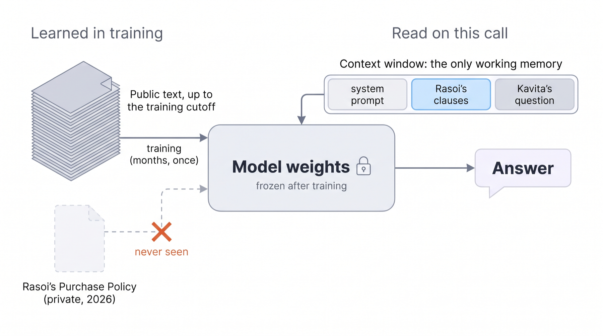
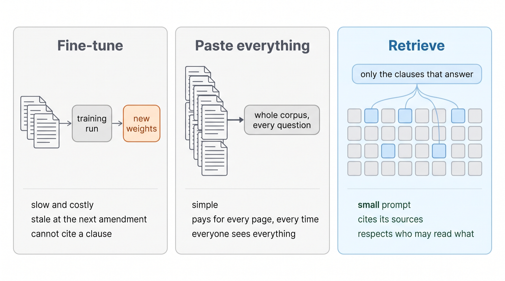
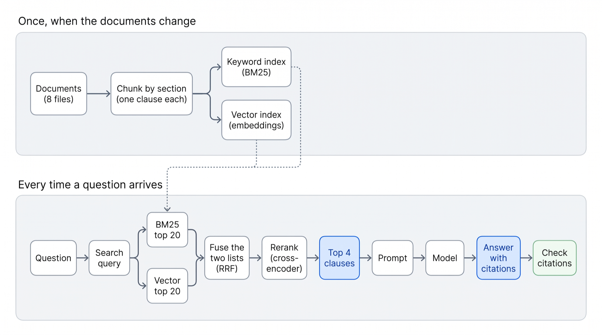
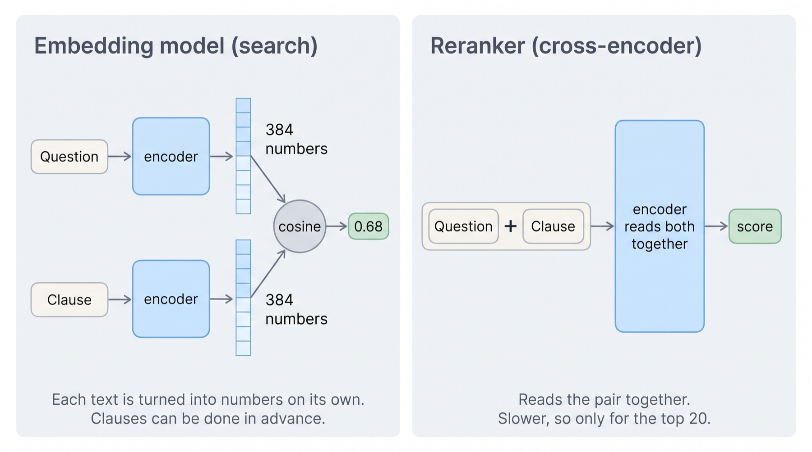
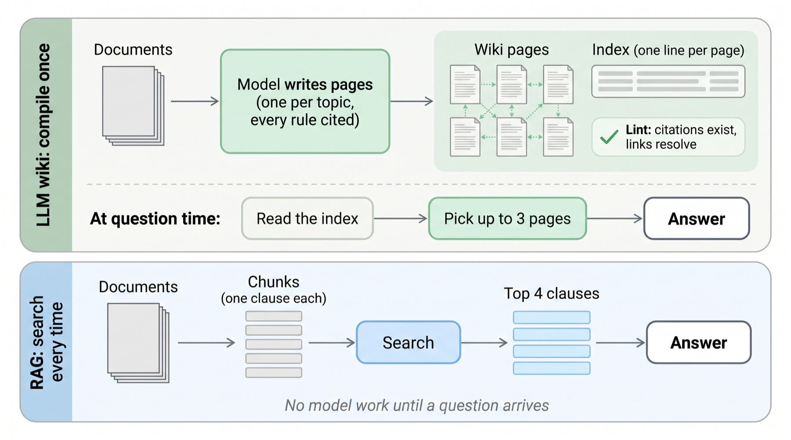
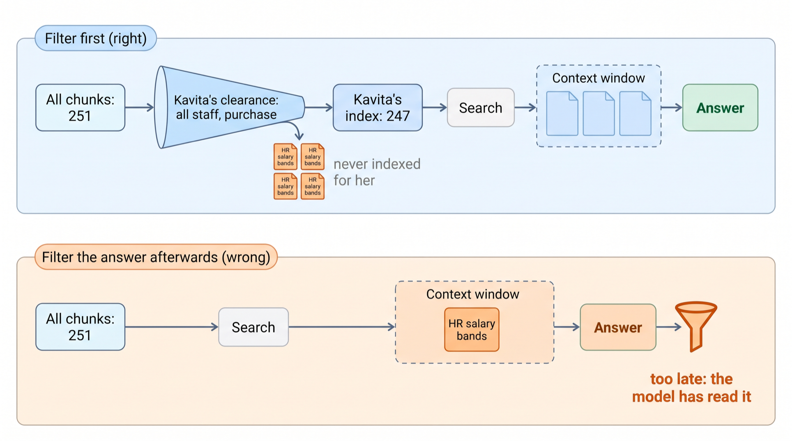

Giving Ask Rasoi knowledge: how a model that has never seen Rasoi’s documents comes to answer from them, and prove it.
Dr. Rajat Dandekar · Vizuara
search_policy, and answers Kavita’s question with Purchase Policy §6.2 cited. You will have built every part of it in NB3.Diwali is coming. Kavita needs 20,000 gaskets for the 5-litre cooker. Deccan Polymers’ contract rate is ₹11.90.
Shakti Seals, Vadodara, quotes ₹10.40. She opens Ask Rasoi, as it stood at the end of Lecture 2, and asks.
Three model sizes, the same question, from our run. Two say yes. The middle one invents an “Approved Vendor List” and a standard, and never mentions the certificate.
experiments/logs/story.json → brain.Suresh Kulkarni, the senior buyer, would say no in one breath. Gaskets touch food.
Shakti Seals is not in Bahi’s supplier master and has no food-grade certificate. Bahi would not stop the order: the rule is not in the ERP. It lives in a PDF, and in Suresh’s head.
The saving is real: 20,000 × (₹11.90 − ₹10.40) = ₹30,000 before GST. So is the risk: a cooker gasket that has never been tested for food contact.
bahi/docs/purchase-policy.md. The model has never read it.How does Ask Rasoi come to know what Rasoi knows, only what each person may read, as of today, and show where it read it?
search_policy joins Ask Rasoi.lectures/L3-the-memory/experiments/logs/.Frozen weights, and one way in.
A model learns in training: months of reading public text, once. Then its weights are frozen.
Rasoi’s documents are private. Two of them are dated after September 2026. One changes again on 1 December.
So no amount of “asking nicely” helps. The model has nothing to remember.
bahi/docs/.Its weights, learned in training. Fixed. Rasoi was never in them.
Its context window: the tokens we send on this one call. The model reads them fresh, every time, and forgets them after.

It is good at teaching a style or a format. It is a poor way to store rules:
Same model, same question. The only difference is what is in its context window.
Without §6.2 it invents rules that sound right.
With §6.2 pasted in (363 tokens in all), it names the food-grade rule and cites it. Press the buttons.
logs/story.json → brain, with62.
Fine-tuning changes the weights. The other two fill the context window.
Paste everything is the simplest. We try it first, and count.
Retrieve sends only the clauses that answer. Most of today is how.
The simplest fix. It works. Then we count.
Eight files. Each starts with front-matter: an id, a version, the date it takes effect, and who may read it.
The user manual is the big one. The HR salary bands are for HR only.
A token (Lecture 2) is the piece of text a model reads; we counted them with Gemini’s own counter.
logs/retrieval_eval.json → corpus.All seven documents Kavita may read, then her question. One call.
It works. The answer cites §6.2, §6.1, §6.4 and the September amendment, all real, all in front of it.
logs/story.json → full.Every question pays for every page, every time.
We ran 40 questions each way. Per question, pasting Kavita’s documents cost 13 times what retrieval did.
Slide the number of questions a day. The rupees per question are measured; the questions a day are yours to guess.
logs/answers_eval.json → summary. At the course’s list price for gemini-3.8-flash.We pasted the whole company’s documents too: purchasing plus all eight module kits.
Still right on 40 of 40. But twice the tokens and twice the rupees, for the same answers.
Two answers cited a finance document (POL-FIN-024 §1) on a purchasing question: real text, wrong shelf.
And it cannot hide a page from one reader. Pasting “everything Kavita may read” means filtering first anyway.
logs/answers_eval.json → summary.full, .company, .rag; corpus sizes from logs/retrieval_eval.json.Find the few paragraphs that answer, and send only those.

Once: cut the documents and index them two ways.
Every question: search both indexes, fuse, rerank, keep the top 4.
We now build each box, left to right.
search_policy (bahi/agent/retrieval.py).The naive cut: windows of N words. Move the slider and watch where §6.2 (green underline) lands.
The better cut for a policy: one clause per chunk, whole, with its heading. Its id is its citation.
Besides its words, each chunk carries five things:
logs/retrieval_eval.json).33 of our test questions have a known right clause. Does a search find it, whole, in its top 5?
By clause, more often, for every search method. Windows lose most with embeddings, which blur a window that mixes three rules.
And a window has no clause id, so the answer could not cite it.
logs/retrieval_eval.json → fixed_vs_section, summary.The oldest idea: a chunk that shares the question’s words is probably about it.
First, turn the question into terms: lower case, drop the small words, cut plurals.
We teach it on the question as Suresh would ask it (scenario 1). We come back to Kavita’s own words in Part four.
A word that appears twice is more telling than once, but not twice as telling.
BM25 bends the count: tf·(k₁+1) / (tf + k₁·L). It rises fast, then flattens at k₁+1. Slide k₁.
L is the chunk’s length against the average. A long chunk mentions everything a little, so its words count less. Slide it.
retrieval.BM25. The length slider starts at §6.2’s own: 47 terms against an average of 33.9.“supplier” is in many chunks, so finding it says little. “litre” is in few.
These are the real counts in Kavita’s index.
For §6.2, term by term, with the real numbers.
Six words earn points. The sum is §6.2’s score for this question.
The same sum for all 247 chunks, highest first.
§6.2 comes fourth.
First is Supplier Policy §4.2, helped by “better”. Kavita meant a better price. §4.2 says “grade 304 or better”. Keywords cannot tell meanings apart.
logs/retrieval_eval.json → s1.bm25.In Lecture 2 an embedding turned a token into a list of numbers. An embedding model does it for a whole passage: ours, bge-small-en-v1.5, gives 384 numbers.
Passages that mean similar things get similar lists. Each dot is one real chunk, squeezed from 384 numbers to 2. The star is a question.
It runs on a CPU, needs no key, and gives the same numbers every run.
Turn the angle. Length does not matter; only direction does.
That is why it suits meaning: a long clause and a short question can still point the same way.
The same formula, on the real vectors of the question and §6.2.
Multiply them dimension by dimension; add the products. Blue pushes towards “same”, ember away.
Over all 384, §6.2 gets 0.7595: the highest of all 247 chunks for this question.
logs/retrieval_eval.json → s1.qvec, s1.c62vec.Rank of the right clause among Kavita’s 247 chunks.
ERR-PO-0412 is letters and digits, not a meaning. Embeddings did not find §17.2 in their top 10. BM25 found it second.BM25 scores are around 20; cosines around 0.7. You cannot add them.
§6.2: rank 4 in BM25, rank 1 in vectors → 1/64 + 1/61 = 0.03202. Try a different k.
logs/retrieval_eval.json → s1.hybrid.
An embedding reads each text alone. A reranker sees both at once, so it can tell “better price” from “grade 304 or better”.
Too slow for 247 chunks; fine for the fused top 20. Ours: ms-marco MiniLM, on a CPU.
Same question, real scores. Each step moves §6.2.
BM25: 4th. Embeddings: 1st.
Fused: 2nd, just behind §4.1.
Reranked: 1st, and the only clause above 0.
All 33 questions with a known right clause. No chat model involved, so it is free to measure: do it every time you change the chunker.
logs/retrieval_eval.json → summary.Retrieve, augment the prompt, generate. On Kavita’s own words.
Now Kavita’s real question goes into the pipeline we just built.
Her words: gaskets, Shakti Seals, quote. The rule’s words: food, certificate, supplier. They share one: gasket.
The reranker scores every candidate below 0. search_policy says: “not in the documents”.
We gave Ask Rasoi search_policy and let the model write its own searches. Scrub through the real run.
Four searches. None says “food”. §6.2 never came back.
The reply cites three real clauses, all true, and misses the one that decides the answer. Correct citations are not the same as the right answer.
What Suresh knows and the model did not: Rasoi makes pressure cookers, so many of the parts it buys touch food.
One long query with that line: §6.2 came first, but scored −1.25, under the cut. One query mixing four topics reads as a poor match for every clause.
One short query per rule: §6.2 comes back at 3.94. This is query rewriting.
The queries and the clauses they found.
The exact prompt the model read: 559 tokens, 777 with its instructions.
The answer, and the citation check.
logs/finding62.json → rewrite. These calls were recorded after the Gemini prepaid credit ran out on 28 Oct, so they reached the same model through OpenRouter.Because each chunk’s id is its citation, a citation is not decoration. It is something we can look up.
Kavita can click it and read the clause. Rohit can check the answer before he approves. Audit can trace it a year later.
Invented: no such clause. Ungrounded: a real clause the model never received: a lucky guess.
“How many gaskets do we have?” has an answer: 54,000. It is in Bahi’s stock table, and it changes every hour. No document holds it.
Can a low score tell us “not in the documents”? Each dot is one question’s best reranker score.
The lowest answerable question scored 1.61: scenario 1 itself. Five of seven unanswerable ones scored above 0. No line separates them.
So the cut only trims junk. Saying “the documents do not say” is the model’s job, told to in its instructions.
logs/retrieval_eval.json → tau. Live facts (stock, budget, status) come from Bahi’s tools: Lecture 4.Compile the documents once, into pages a model can browse.

The model does the reading before anyone asks. A code check lints it: every citation must exist, every link must resolve.
At question time it reads the index, picks up to three pages, and answers.
retrieval.Wiki: compile(), update(), answer().The wiki our compile wrote. A circle is a page; a line is a link the model wrote. Click a page.
The HR page is compiled on its own, from HR sources only, with no links: a restricted page must not be one click from an open one.
Compiling took 21 model calls: 52,132 tokens in, 22,253 out, ₹8.17, once. The index a question reads first is 772 tokens.
bahi/wiki/, compiled 27 Oct (logs/v2_wiki_compile.json, copied from the v2 run).Same question, Kavita’s own words, no rewriting.
The model reads the index, sees a page called “Food-grade compliance”, and knows that gaskets for cookers belong there. A search engine cannot make that jump; a model reading a table of contents can.
It cites §6.2, §6.1, §6.4 and the amendment. All grounded.
logs/finding62.json → wiki.| RAG | LLM wiki | |
|---|---|---|
| Work before any question | Chunk and index: no model calls | Compile: 21 model calls, ₹8.17 |
| Per question | 1 call, 579 tokens in (measured mean) | 2 calls, 2,802 tokens in |
| Kavita’s own words | missed until the model rewrote the query | found §6.2 from the index |
| When a rule changes | re-index the amendment’s 6 chunks, no model calls | recompile the 1 page it touches (2,221 tokens in); forget, and it is stale |
| What can go wrong | the search misses a clause | the page picker misses a page; a page freezes old wording |
Ask Rasoi uses RAG behind search_policy, and the wiki is a good second opinion. Many teams keep both.
Access control and freshness.

Build each person’s index from only what they may read. What is not in her index cannot reach her context window, whatever the prompt says.
Retriever(permissions=True) filters by audience before ranking.An amendment names the clause it replaces and the date it starts. The retriever reads that date against Bahi’s clock.
In force: the old clause leaves the index. Not yet in force: both stay, each labelled with its dates. Drag the date.
40 questions, five ways, graded by code.
40 questions asked as Kavita: 20 policy, 8 manual, 5 where an amendment matters, 2 asking for HR’s page, 5 traps (live facts no document holds). One model, gemini-3.8-flash, the same answer instructions. Graded by code: facts by pattern, citations by clause id. No model judge.
| System | What goes into the context window | Calls |
|---|---|---|
| Model alone | The question only. | 1 |
| Paste Kavita’s documents | All 7 she may read, every time (13,352 tokens). | 1 |
| Paste the whole company’s | Purchasing plus the 8 module kits, 49 documents (28,173 tokens). | 1 |
| RAG | search_policy: top 4 clauses after hybrid search and rerank, filtered and dated. | 1 |
| LLM wiki | The index, then up to three pages. | 2 |
Script experiments/answers_eval.py; questions and grader experiments/questions.py (from v2, unchanged); re-run on 28 Oct with today’s code.
logs/answers_eval.json → summary. “Right clause in context”: 100% by definition when everything is pasted. The whole-company paste’s 2 “invented” are POL-FIN-024 §1, a real finance-kit clause the purchasing checker does not know.Everything today, behind one tool.
Ask Rasoi’s toolbox has one folder per business activity. This is the knowledge one: bahi/toolbox/search_policy/.
tool.json tells the model what the tool does. tool.py runs it, as the signed-in user, so Kavita’s clearance applies.
How a model decides to call a tool is Lecture 4. Today, watch it happen.
Ask Rasoi at the knowledge stage, with the one line of company context. Scrub the real run.
Third search: “food contact supplier approval test report”. §6.2 comes back.
The reply cites §6.2 first, says what to check in Bahi, and admits what it cannot see yet. 0 invented citations.
One line of context fixed Kavita’s question. Did it break others? Six of the 40, before and after.
All six right both ways. It searched a little more on the food-grade questions, so they cost a little more.
logs/finding62.json → check6. Trap and HR questions count as right when the reply states no fact and says it cannot see or the documents do not cover it.You build each piece by hand, on Rasoi’s documents.
NB3 Replays with no key and no model download, on free Colab.
Due before Lecture 4, Sun 8 Nov. Feeds the 15 retrieval points of the capstone.
bahi/modules/<kit>/docs/).search_<kit>_policy.bahi.agent.retrieval as it is. Write the audience map, the questions, the measurements.Ask Rasoi has a brain and a memory: retrieval with citations, filtered by who is asking, dated to today, behind search_policy.
What it still cannot do: look in Bahi. It cannot see that Shakti Seals is not in the supplier master, or that Rasoi has 54,000 gaskets.
figures/ask_rasoi_architecture_wide.png), Lecture 3’s piece lit: Knowledge, and its tool.Tools and MCP. Ask Rasoi checks the supplier master and the stock itself, and raises Kavita’s purchase request.